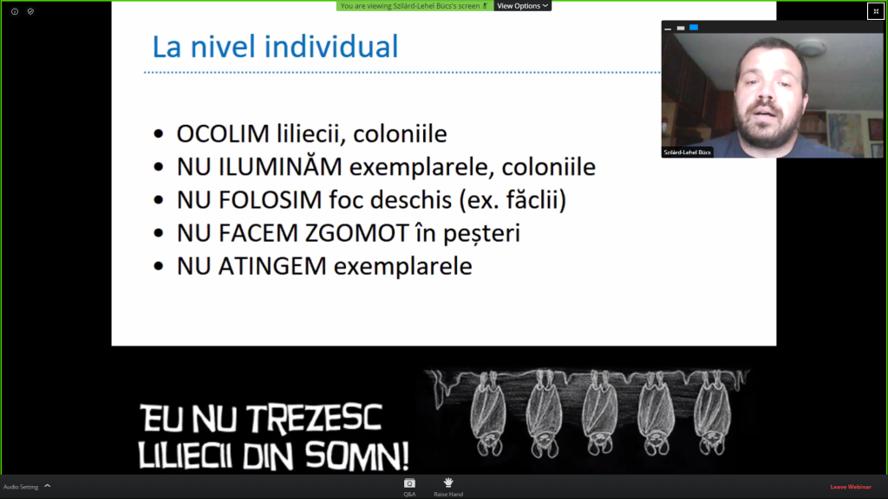
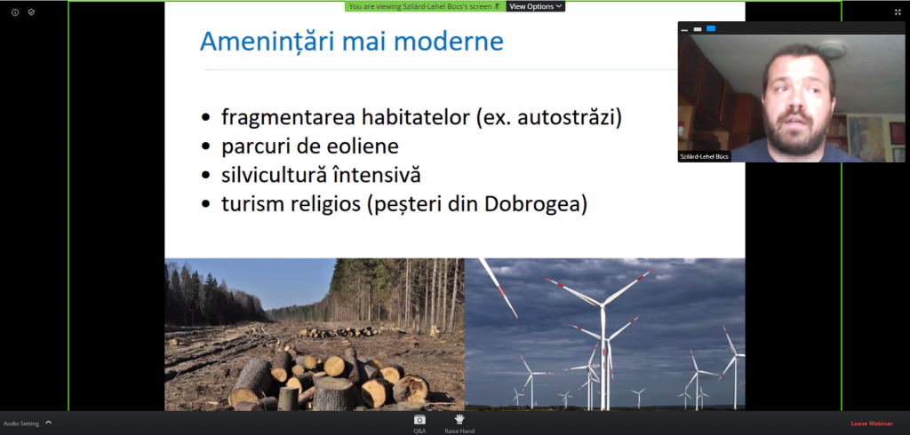

Atelierul dedicat liliecilor

În ziua de 16 mai 2020 am avut marea plăcere să particip la Atelierul despre lilieci. Având în vedere situația actuală, a picat la momentul ideal.

Am aflat despre lilieci că sunt mult mai importanți decât credeam și mai mult decât atât, nu sunt deloc cum bănuiam eu. Toate miturile, cum ar fi că se blochează în păr sau se hranesc cu sângele oamenilor, sunt false. Adevărat este însă, că ei ne scapă de țântari si alte insecte enervante, ei hrănindu-se cu acestea.Cel mai important este că fără ei nu am fi avut ciocolată. Cum așa? Păi lilieci din zonele calde se hranesc cu polen, astfel polenizează arborele de cacao și multe alte fructe cum ar fi: avocado, mango si banane.

Mă bucur că am putut împartași asta cu voi si că mai mulți au ocazia să afle că bieții lilieci nu au nici o vină pentru cele întamplate.Activitatea aceasta mi s-a părut super utilă, sper să mai particip și la altele de genul acesta și să învăț mai multe lucruri noi.
David,explo